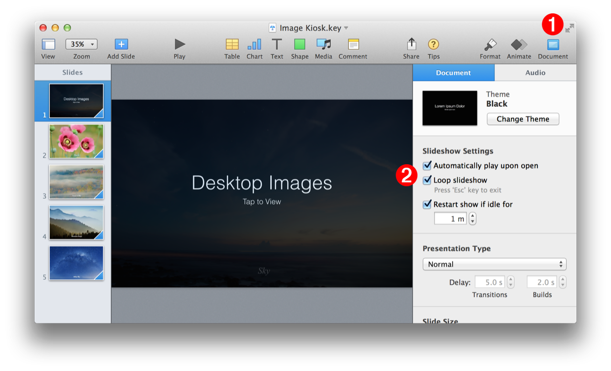
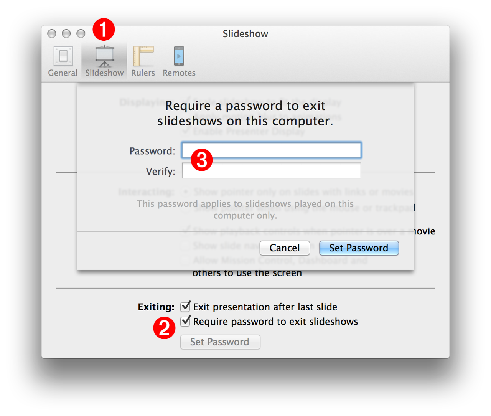

Keynote in an excellent tool for creating interactive presentations designed to be displayed by Mac-based kiosks or Apple computers functioning as kiosks. The document class contains properties for setting up a presentation to become kiosk-ready.
A script example demonstrating this process is included on this page.
The Keynote Suite Document Class (excerpt)
documentn : [see also Standard Suite, Compatibility Suite] : The Keynote document. synpresentation
properties
auto loop ( boolean ) : When this property’s value is set to true, the slideshow will play repeatedly.
auto play ( boolean ) : When this property’s value is set to true, the slideshow will play when it is opened.
auto restart ( boolean ) : When this property’s value is set to true, the playing slideshow will start over, if the idle time, indicated by the maximum idle duration property, is reached.
maximum idle duration ( integer ) : The time (in minutes) before restarting the presentation. This property is implemented only if the value of the auto restart property is true.
slide numbers showing ( boolean ) : Are the slide numbers displayed on the slide?
The script properties shown above correspond to those displayed in the application interface:
(⬇ see below ) Select the Document tab 1 to access the slideshow settings options. 2

(⬇ see below ) The kiosk display controls in the application’s Slideshow preference tab. 1 To set your computer to kiosk mode, select the “Require password…” checkbox 2 and then enter the password 3 to prevent the running presentation from being stopped.

DO THIS ►DOWNLOAD (30MB) an example image kiosk created using the script below. The auto-restart time is set to one minute.
The following script will create a simple image slideshow, set the document to be kiosk-ready, and then save, quit, and re-open the document:
Make, Save, and Play Image Kiosk
01
-- Create a new document and save it into the Documents folder
Mention of third-party websites and products is for informational purposes only and constitutes neither an endorsement nor a recommendation. MACOSXAUTOMATION.COM assumes no responsibility with regard to the selection, performance or use of information or products found at third-party websites. MACOSXAUTOMATION.COM provides this only as a convenience to our users. MACOSXAUTOMATION.COM has not tested the information found on these sites and makes no representations regarding its accuracy or reliability. There are risks inherent in the use of any information or products found on the Internet, and MACOSXAUTOMATION.COM assumes no responsibility in this regard. Please understand that a third-party site is independent from MACOSXAUTOMATION.COM and that MACOSXAUTOMATION.COM has no control over the content on that website. Please contact the vendor for additional information.

%20as%20string%0Drepeat%20with%20i%20from%200%20to%20100000%0D%09if%20i%20is%200%20then%0D%09%09set%20incrementText%20to%20%22%22%0D%09else%0D%09%09set%20incrementText%20to%20%22-%22%20%26%20(i%20as%20string)%0D%09end%20if%0D%09set%20thisFileName%20to%20nameToUse%20%26%20incrementText%20%26%20%22.key%22%0D%09set%20thisFilePath%20to%20destinationFolderHFSPath%20%26%20thisFileName%0D%09tell%20application%20%22Finder%22%0D%09%09if%20not%20(exists%20document%20file%20thisFilePath)%20then%20exit%20repeat%0D%09end%20tell%0Dend%20repeat%0D%0D--%20GET%20THE%20CURRENT%20SCREEN%20DIMENSIONS%0Dtell%20application%20%22Finder%22%0D%09copy%20the%20bounds%20of%20the%20window%20of%20the%20desktop%20to%20%C2%AC%0D%09%09%7Bx%2C%20y%2C%20screenWidth%2C%20screenHeight%7D%0Dend%20tell%0D%0D--%20CREATE%20A%20NEW%20PRESENTATION%0Dtell%20application%20%22Keynote%22%0D%09activate%0D%09if%20playing%20is%20true%20then%20tell%20the%20front%20document%20to%20stop%0D%09%0D%09--%20CREATE%20THE%20DOCUMENT%0D%09set%20thisDocument%20to%20make%20new%20document%20with%20properties%20%C2%AC%0D%09%09%7Bdocument%20theme%3Atheme%20%22Black%22%2C%20width%3AscreenWidth%2C%20height%3AscreenHeight%7D%0D%09%0D%09tell%20thisDocument%0D%09%09set%20theseImages%20to%20%7B%7D%0D%09%09repeat%20with%20i%20from%201%20to%205%0D%09%09%09if%20i%20is%201%20then%0D%09%09%09%09--%20SET%20THE%20TITLE%20SLIDE%0D%09%09%09%09set%20the%20base%20slide%20of%20the%20first%20slide%20to%20master%20slide%20%22Title%20%26%20Subtitle%22%0D%09%09%09%09tell%20slide%20i%0D%09%09%09%09%09set%20the%20object%20text%20of%20the%20default%20title%20item%20to%20%22Desktop%20Images%22%0D%09%09%09%09%09set%20the%20object%20text%20of%20the%20default%20body%20item%20to%20%22Tap%20to%20View%22%0D%09%09%09%09end%20tell%0D%09%09%09else%0D%09%09%09%09--%20MAKE%20NEW%20IMAGE%20SLIDE%0D%09%09%09%09make%20new%20slide%20with%20properties%20%7Bbase%20slide%3Amaster%20slide%20%22Blank%22%7D%0D%09%09%09end%20if%0D%09%09%09%0D%09%09%09--%20GET%20THE%20RANDOM%20IMAGE%0D%09%09%09repeat%0D%09%09%09%09copy%20my%20getRandomDesktopPicture()%20to%20%C2%AC%0D%09%09%09%09%09%7BthisImageFileName%2C%20thisImageFile%7D%0D%09%09%09%09if%20theseImages%20does%20not%20contain%20thisImageFileName%20then%0D%09%09%09%09%09set%20the%20end%20of%20theseImages%20to%20thisImageFileName%0D%09%09%09%09%09exit%20repeat%0D%09%09%09%09end%20if%0D%09%09%09end%20repeat%0D%09%09%09--%20trim%20the%20file%20extension%20(.jpg)%20from%20the%20file%20name%0D%09%09%09set%20thisImageName%20to%20text%201%20thru%20-5%20of%20thisImageFileName%0D%09%09%09%0D%09%09%09--%20ADD%20THE%20IMAGE%20FILE%20TO%20THE%20FIRST%20SLIDE%0D%09%09%09tell%20slide%20i%0D%09%09%09%09--%20IMPORT%20THE%20DESKTOP%20IMAGE%0D%09%09%09%09set%20thisImage%20to%20%C2%AC%0D%09%09%09%09%09make%20new%20image%20with%20properties%20%7Bfile%3AthisImageFile%7D%0D%09%09%09%09tell%20thisImage%0D%09%09%09%09%09set%20thisItemHeight%20to%20its%20height%0D%09%09%09%09%09if%20thisItemHeight%20is%20not%20screenHeight%20then%0D%09%09%09%09%09%09--%20FILL%20IMAGE%20TO%20SLIDE%20HEIGHT%20AND%20CENTER%0D%09%09%09%09%09%09set%20height%20of%20it%20to%20screenHeight%0D%09%09%09%09%09%09set%20thisItemWidth%20to%20its%20width%0D%09%09%09%09%09%09set%20the%20position%20of%20it%20to%20%7B((screenWidth%20-%20thisItemWidth)%20div%202)%2C%200%7D%0D%09%09%09%09%09end%20if%0D%09%09%09%09%09if%20i%20is%201%20then%20set%20opacity%20to%2020%0D%09%09%09%09end%20tell%0D%09%09%09%09%0D%09%09%09%09--%20CREATE%20A%20TEXT%20OVERLAY%20DISPLAYING%20IMAGE%20NAME%0D%09%09%09%09set%20thisTitleBox%20to%20%C2%AC%0D%09%09%09%09%09make%20new%20text%20item%20with%20properties%20%7Bobject%20text%3AthisImageName%7D%0D%09%09%09%09tell%20thisTitleBox%0D%09%09%09%09%09set%20font%20of%20object%20text%20of%20it%20to%20%22Times%20New%20Roman%20Italic%22%0D%09%09%09%09%09set%20thisItemHeight%20to%20its%20height%0D%09%09%09%09%09copy%20position%20of%20it%20to%20%7BhorizontalPosition%2C%20verticalPositon%7D%0D%09%09%09%09%09set%20position%20of%20it%20to%20%7BhorizontalPosition%2C%20screenHeight%20-%20(thisItemHeight%20*%202)%7D%0D%09%09%09%09%09if%20i%20is%201%20then%20set%20opacity%20to%2020%0D%09%09%09%09end%20tell%0D%09%09%09%09%0D%09%09%09%09--%20APPLY%20TRANSITION%0D%09%09%09%09set%20the%20transition%20properties%20to%20%C2%AC%0D%09%09%09%09%09%7Btransition%20effect%3Adissolve%2C%20transition%20duration%3A2.0%2C%20transition%20delay%3A0%2C%20automatic%20transition%3Afalse%7D%0D%09%09%09end%20tell%0D%09%09end%20repeat%0D%09%09%0D%09%09--%20SET%20THE%20KIOSK%20PROPERTIES%0D%09%09set%20auto%20play%20to%20true%0D%09%09set%20auto%20loop%20to%20true%0D%09%09set%20auto%20restart%20to%20true%0D%09%09set%20maximum%20idle%20duration%20to%201%20--%20minute%0D%09%09%0D%09%09--%20MOVE%20TO%20THE%20STARTING%20SLIDE%20BEFORE%20SAVING%0D%09%09my%20moveToSlide(first%20slide%20of%20it)%0D%09end%20tell%0D%09%0D%09--%20SAVE%20AND%20CLOSE%20THE%20DOCUMENT%0D%09save%20thisDocument%20in%20file%20thisFilePath%0D%09close%20the%20front%20document%20saving%20no%0D%09%0Dend%20tell%0D%0D--%20LAUNCH%20THE%20KIOSK%0Dtell%20application%20%22Finder%22%0D%09open%20document%20file%20thisFilePath%0Dend%20tell%0D%0Don%20getRandomDesktopPicture()%0D%09--%20GET%20A%20RANDOM%20IMAGE%20FROM%20THE%20DESKTOP%20PICTURES%20FOLDER%0D%09set%20desktopPicturesFolder%20to%20(path%20to%20desktop%20pictures%20folder)%0D%09set%20the%20imageFileNames%20to%20every%20paragraph%20of%20%C2%AC%0D%09%09(do%20shell%20script%20%22ls%20%22%20%26%20quoted%20form%20of%20POSIX%20path%20of%20desktopPicturesFolder)%0D%09--%3E%20RETURNS%3A%20%7B%22Abstract.jpg%22%2C%20%22Antelope%20Canyon.jpg%22%2C%20%22Bahamas%20Aerial.jpg%22%2C%20etc.%7D%0D%09set%20thisImageFileName%20to%20some%20item%20of%20the%20imageFileNames%0D%09--%3E%20RETURNS%3A%20%22Mountain%20Range.jpg%22%0D%09set%20thisImageFile%20to%20%C2%AC%0D%09%09((desktopPicturesFolder%20as%20string)%20%26%20thisImageFileName)%20as%20alias%0D%09--%3E%20RETURNS%3A%20alias%20%22Macintosh%20HD%3ALibrary%3ADesktop%20Pictures%3AMountain%20Range.jpg%22%0D%09return%20%7BthisImageFileName%2C%20thisImageFile%7D%0Dend%20getRandomDesktopPicture%0D%0Don%20moveToSlide(thisSlide)%0D%09tell%20application%20%22Keynote%22%0D%09%09tell%20front%20document%0D%09%09%09if%20thisSlide%20is%20last%20slide%20then%0D%09%09%09%09start%20from%20slide%20before%20last%20slide%0D%09%09%09%09tell%20application%20%22Keynote%22%0D%09%09%09%09%09show%20slide%20switcher%0D%09%09%09%09%09move%20slide%20switcher%20forward%0D%09%09%09%09%09accept%20slide%20switcher%0D%09%09%09%09%09stop%20front%20document%0D%09%09%09%09end%20tell%0D%09%09%09else%0D%09%09%09%09set%20thisSlideNumber%20to%20slide%20number%20of%20thisSlide%0D%09%09%09%09start%20from%20slide%20(thisSlideNumber%20%2B%201)%0D%09%09%09%09tell%20application%20%22Keynote%22%0D%09%09%09%09%09show%20slide%20switcher%0D%09%09%09%09%09move%20slide%20switcher%20backward%0D%09%09%09%09%09accept%20slide%20switcher%0D%09%09%09%09%09stop%20front%20document%0D%09%09%09%09end%20tell%0D%09%09%09end%20if%0D%09%09end%20tell%0D%09end%20tell%0Dend%20moveToSlide){kind=link}